Vai um Cafezinho aí?
Conheça os Segredos do Café Nordestino
Cafés Especiais
Você sabe o que são os cafés especiais? São aqueles que proporcionam uma verdadeira experiência sensorial. Atingem, no mínimo, 80 pontos nos critérios de fragrância, aroma, uniformidade, doçura, acidez e finalização.
Conheça a nossa loja virtual, onde você pode fazer o seu pedido em poucos cliques e levar para casa os nossos produtos. Além de comprar café especial, você também encontra acessórios personalizados, como canecas, conjunto de xícaras, coador, chapéu e camisetas.
Quem Somos
Café Nordestino Almofada 250g
A Mulligan foi convidada pela São Braz, empresa com mais de 62 anos de tradição em torrefação e distribuição de alimentos e uma das mais populares da região Nordeste do país, para revitalizar um de seus principais produtos: o Café Nordestino.
O resultado foi um revamp completo, no qual foi possível aumentar o valor agregado ao produto sem que ele perdesse seu apelo popular. O layout foi construído de maneira que a composição se tornasse mais clean, leve e equilibrada, mas que também atraísse o olhar do consumidor com um appetite-appeal forte e instigante.